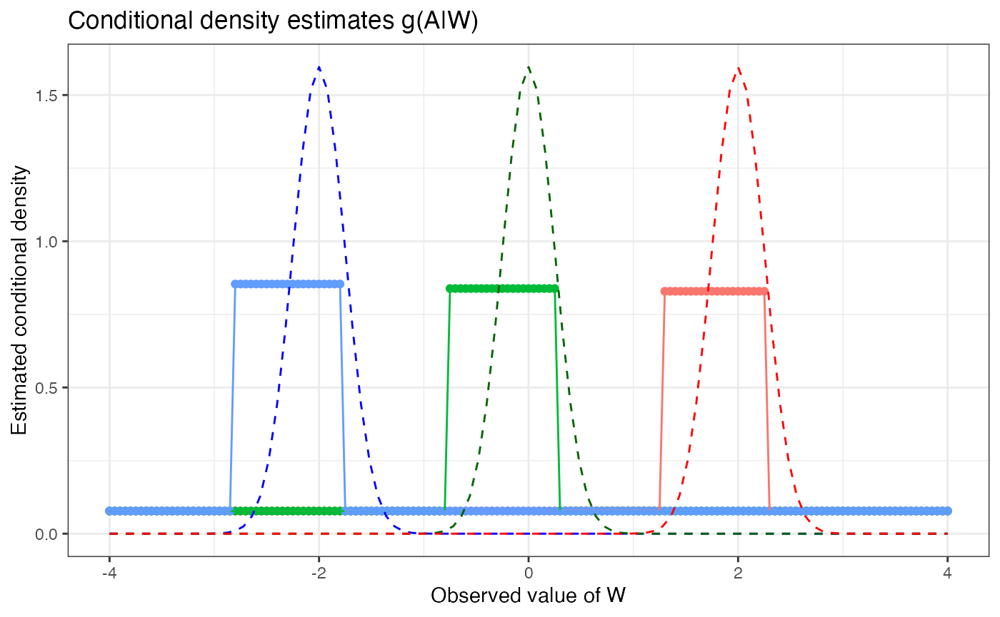

Highly Adaptive Lasso Conditional Density Estimation
Nima Hejazi and David Benkeser
2021-07-03
Source:vignettes/intro_haldensify.Rmd
intro_haldensify.RmdBackground and Motivation
In causal inference problems, both classical estimators (e.g., based on inverse probability weighting) and doubly robust estimators (e.g., one-step estimation, targeted minimum loss estimation) require estimation of the propensity score, a nuisance parameter corresponding to the treatment mechanism. While exposures of interest may often be continuous-valued, most approaches opt to discretize the exposure so as to estimate effects based on categorical exposures – such a simplification is often done out of convenience, to avoid estimation of the generalized propensity score (???; ???), which is a conditional density function. The haldensify package introduces a flexible approach for estimating such conditional density functions, using the highly adaptive lasso (HAL), a nonparametric regression function that has been proven to converge to a given target function(al) at \(n^{-1/3}\)-rate under minimal conditions.
Consider data generated by typical cohort sampling \(O = (W, A, Y)\), where \(W\) is a vector of baseline covariates, A is a continuous-valued exposure, and \(Y\) is an outcome of interest. Estimation of the generalized propensity score \(q_{0,A}\) corresponds to estimating the conditional density of \(A\) given \(W = w\). A simple strategy for estimating this nuisance function is to assume a parametric working model and use parametric regression to generate suitable density estimates. For example, one could operate under the working assumption that \(A\) given \(W\) follows a Gaussian distribution with homoscedastic variance and mean \(\sum_{j=1}^p \beta_j \phi_j(W)\), where \(\phi = (\phi_j : j)\) are user-selected basis functions and \(\beta = (\beta_j : j)\) are unknown regression parameters. In this case, a density estimate would be generated by fitting a linear regression of \(A\) on \(\phi(W)\) to estimate the conditional mean of \(A\) given \(W\), paired with an estimate of the variance of \(A\). Then, the estimated conditional density would be given by the density of a Gaussian distribution evaluated at these estimates. Unfortunately, most such approaches do not allow for flexible modeling of \(q_{0,A}\). This motivated our development of a novel and flexible procedure for constructing conditional density estimates \(q_{n,A}(a \mid w)\) of \(A\) given \(W = w\) (possibly subject to observation-level weights), evaluated at \(a \in \mathcal{A}\).
Pooled hazards conditional density estimation
As consistent estimation of the generalized propensity score is an integral part of constructing estimators of the causal effects of continuous-valued exposures, our conditional density estimator, built around the HAL regression function, may be quite useful in flexibly constructing such estimates. We note that proposals for the data adaptive estimation of such quantities are sparse in the literature (e.g., (???)). Notably, Dı́az and van der Laan (2011) gave a proposal for constructing semiparametric estimators of such a target quantity based on exploiting the relationship between the hazard and density functions. Our proposal builds upon theirs in several key ways:
- we adjust their algorithm so as to incorporate sample-level weights, necessary for making use of sample-level weights (e.g., inverse probability of censoring weighting); and
- we replace their use of an arbitrary classification model with the HAL regression function.
While our first modification is general and may be applied to the estimation strategy of Dı́az and van der Laan (2011), our latter contribution requires adjusting the penalization aspect of HAL regression models so as to respect the use of a loss function appropriate for density estimation on the hazard scale.
To build an estimator of a conditional density, Dı́az and van der Laan (2011) considered discretizing the observed \(a \in A\) based on a number of bins \(T\) and a binning procedure (e.g., including the same number of points in each bin or forcing bins to be of the same length). We note that the choice of the tuning parameter \(T\) corresponds roughly to the choice of bandwidth in classical kernel density estimation; this will be made clear upon further examination of the proposed algorithm. The data \(\{A, W\}\) are reformatted such that the hazard of an observed value \(a \in A\) falling in a given bin may be evaluated via standard classification techniques. In fact, this proposal may be viewed as a re-formulation of the classification problem into a corresponding set of hazard regressions: \[\begin{align*} \mathbb{P} (a \in [\alpha_{t-1}, \alpha_t) \mid W) =& \mathbb{P} (a \in [\alpha_{t-1}, \alpha_t) \mid A \geq \alpha_{t-1}, W) \times \\ & \prod_{j = 1}^{t -1} \{1 - \mathbb{P} (a \in [\alpha_{j-1}, \alpha_j) \mid A \geq \alpha_{j-1}, W) \}, \end{align*}\] where the probability that a value of \(a \in A\) falls in a bin \([\alpha_{t-1}, \alpha_t)\) may be directly estimated from a standard classification model. The likelihood of this model may be re-expressed in terms of the likelihood of a binary variable in a data set expressed through a repeated measures structure. Specifically, this re-formatting procedure is carried out by creating a data set in which any given observation \(A_i\) appears (repeatedly) for as many intervals \([\alpha_{t-1}, \alpha_t)\) that there are prior to the interval to which the observed \(a\) belongs. A new binary outcome variable, indicating \(A_i \in [\alpha_{t-1}, \alpha_t)\), is recorded as part of this new data structure. With the re-formatted data, a pooled hazard regression, spanning the support of \(A\) is then executed. Finally, the conditional density estimator \[\begin{equation*} q_{n, \alpha}(a \mid W) = \frac{\mathbb{P}(a \in [\alpha_{t-1}, \alpha_t) \mid W)}{(\alpha_t - \alpha_{t-1})}, \end{equation*}\] for \(\alpha_{t-1} \leq a \le \alpha_t\), may be constructed. As part of this procedure, the hazard estimates are mapped to density estimates through rescaling of the estimates by the bin size (\(\alpha_t - \alpha_{t-1}\)).
In its original proposal, a key element of this procedure was the use of any arbitrary classification procedure for estimating \(\mathbb{P}(a \in [\alpha_{t-1}, \alpha_t) \mid W)\), facilitating the incorporation of flexible, data adaptive estimators. We alter this proposal in two ways,
- replacing the arbitrary estimator of \(\mathbb{P}(a \in [\alpha_{t-1}, \alpha_t) \mid W)\) with HAL regression, and
- accommodating the use of sample-level weights, making it possible for the resultant conditional density estimator to achieve a convergence rate with respect to a loss-based dissimilarity of \(n^{-1/3}\) under only mild assumptions.
Our procedure alters the HAL regression function to use a loss function tailored for estimation of the hazard, invoking \(\ell_1\)-penalization in a manner consistent with this loss.
Example
First, let’s load a few required packages and set a seed for our example.
library(haldensify)
library(data.table)
library(ggplot2)
set.seed(75681)Next, we’ll generate a simple simulated dataset. The function make_example_data, defined below, generates a baseline covariate \(W\) and a continuous-valued exposure variable \(A\), whose mean is a function of \(W\).
make_example_data <- function(n_obs) {
W <- runif(n_obs, -4, 4)
A <- rnorm(n_obs, mean = W, sd = 0.25)
dat <- as.data.table(list(A = A, W = W))
return(dat)
}Now, let’s simulate our data and take a quick look at it:
# number of observations in our simulated dataset
n_obs <- 200
example_data <- make_example_data(n_obs)
# quick look at the data
head(example_data)## A W
## 1: 2.3063922 2.24687273
## 2: 0.9297479 0.91025531
## 3: -3.2443382 -2.98696024
## 4: -0.1842217 -0.01204378
## 5: 3.2756387 3.59166824
## 6: -2.9132139 -3.02363838Next, we’ll fit our pooled hazards conditional density estimator via the haldensify wrapper function. Based on underlying theory and simulation experiments, we recommend setting a relatively large number of bins and using a binning strategy that accommodates creating such a large number of bins.
haldensify_fit <- haldensify(
A = example_data$A,
W = example_data$W,
n_bins = c(10, 20),
grid_type = "equal_range",
lambda_seq = exp(seq(-0.1, -10, length = 500)),
# the following are passed to hal9001::fit_hal() internally
max_degree = 5,
num_knots = NULL,
smoothness_orders = 0,
reduce_basis = 1 / sqrt(n_obs)
)
haldensify_fit## coef term
## 1: 4.015834 (Intercept)
## 2: 8.219963 [ I(W >= -3.305) ]
## 3: 7.080282 [ I(bin_id >= 9) ]
## 4: -6.906777 [ I(W >= -3.393) ]
## 5: 6.111346 [ I(bin_id >= 7) ]
## 6: 5.984919 [ I(W >= 0.474) ]
## 7: 5.615845 [ I(bin_id >= 2) ]
## 8: 5.536335 [ I(bin_id >= 4) ]
## 9: 5.375681 [ I(bin_id >= 13) ]
## 10: 5.270633 [ I(W >= -0.267) ]Having constructed the conditional density estimator, we can examine the empirical risk over the grid of choices of the \(L_1\) regularization parameter \(\lambda\). To do this, we can simply call the available plot method, which uses the cross-validated conditional density fits in the cv_tuning_results slot of the haldensify object. For example,
p_risk <- plot(haldensify_fit)
p_risk
Finally, we can predict the conditional density over the grid of observed values \(A\) across different elements of the support \(W\). We do this using the predict method of haldensify and plot the results below.
# predictions to recover conditional density of A|W
new_a <- seq(-4, 4, by = 0.05)
new_dat <- as.data.table(list(
a = new_a,
w_neg = rep(-2, length(new_a)),
w_zero = rep(0, length(new_a)),
w_pos = rep(2, length(new_a))
))
new_dat[, pred_w_neg := predict(haldensify_fit, new_A = new_dat$a,
new_W = new_dat$w_neg)]
new_dat[, pred_w_zero := predict(haldensify_fit, new_A = new_dat$a,
new_W = new_dat$w_zero)]
new_dat[, pred_w_pos := predict(haldensify_fit, new_A = new_dat$a,
new_W = new_dat$w_pos)]
# visualize results
dens_dat <- melt(new_dat, id = c("a"),
measure.vars = c("pred_w_pos", "pred_w_zero", "pred_w_neg"))
p_dens <- ggplot(dens_dat, aes(x = a, y = value, colour = variable)) +
geom_point() +
geom_line() +
stat_function(fun = dnorm, args = list(mean = -2, sd = 0.25),
colour = "blue", linetype = "dashed") +
stat_function(fun = dnorm, args = list(mean = 0, sd = 0.25),
colour = "darkgreen", linetype = "dashed") +
stat_function(fun = dnorm, args = list(mean = 2, sd = 0.25),
colour = "red", linetype = "dashed") +
labs(
x = "Observed value of W",
y = "Estimated conditional density",
title = "Conditional density estimates q(A|W)"
) +
theme_bw() +
theme(legend.position = "none")
p_dens